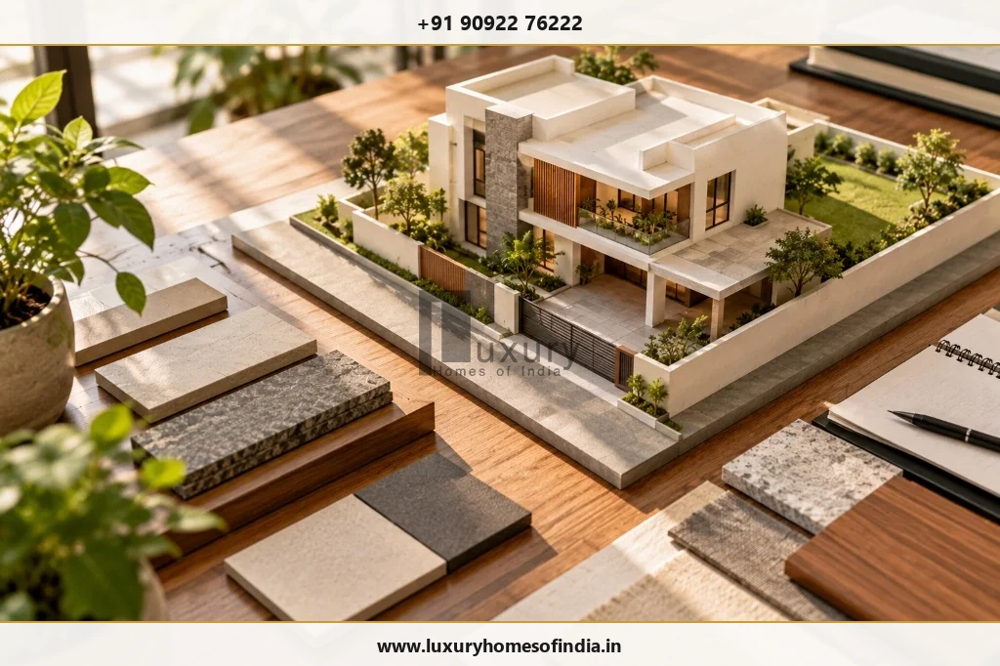

The CMDA building plan approval process in Chennai helps determine whether a proposed development meets the applicable planning requirements before construction begins. The correct application route depends on the property's location, the type and scale of the building, and the authority responsible for that category. Some applications are handled by the Greater Chennai Corporation (GCC), while others require submission to the Chennai Metropolitan Development Authority (CMDA).
Homeowners should first verify their property's planning status, land records, permitted use and applicable development regulations. The next steps generally involve appointing the appropriate registered professional, preparing drawings and supporting documents, submitting the application through the relevant online portal, responding to scrutiny queries, and paying assessed charges. Where a separate building permit is required, planning permission alone is not sufficient to start construction. For a luxury home, checking feasibility before finalising the architectural design can reduce avoidable revisions and improve coordination between design, approvals and construction planning.
Key Takeaways: CMDA Approval Process at a Glance
- Planning Permission ≠ Building Permit: CMDA sanctions the macro Planning Permission (PP); you must still obtain the local body Building Permit (from GCC or local municipality) before starting civil work.
- GCC vs CMDA Routing: Non-high-rise residential homes within specified thresholds are processed directly by GCC under delegated powers, while larger developments, commercial buildings, and special areas require direct CMDA scrutiny.
- Digital Portal Filings: Applications for CMDA planning permission are filed online via the CMDA Online PPA Portal or the Tamil Nadu Single Window Portal.
- Pre-Design Land Verification: Always reconcile registered sale deeds with patta, FMB revenue sketches, and TSLR records before freezing architectural floor plans.
- Separated Project Budgets: Maintain an independent budget for statutory charges (scrutiny, development charges, infrastructure & amenities, labor welfare fund) distinct from architectural and civil construction costs.
1. What Is CMDA Building Plan Approval?
The Chennai Metropolitan Development Authority is a statutory planning authority with responsibilities relating to development planning in the Chennai Metropolitan Area under the Tamil Nadu Town and Country Planning Act, 1971. Planning permission assesses a proposed development against the relevant planning regulations and the Tamil Nadu Combined Development and Building Rules, 2019 (TNCDBR-2019).
Depending on the proposal, technical scrutiny by CMDA typically assesses:
- Permitted Land Use: Conformity with the Second Master Plan for Chennai Metropolitan Area (e.g., Primary Residential, Mixed Residential, or Commercial zones).
- Plot Dimensions & Road Access: Measured plot boundaries, survey numbers, and verifiable abutting public road widths.
- Setbacks & Open Spaces: Mandatory front, rear, and side setback distances based on building height and plot width.
- Floor Space Index (FSI) & Height: Permissible floor area, plot coverage, number of floors, and overall building height.
- Parking & Vehicular Circulation: Required on-site car parking bays, driveway turning radiuses, and pedestrian walkways.
- Structural & Environmental Submissions: Structural stability certificates from registered engineers, soil test reports, and rainwater harvesting designs.
- Statutory Department Clearances: Additional clearances applicable to the site (e.g., CRZ for coastal areas, PWD for waterbodies, Metro Rail, or Airport Authority).
For official information, start with the CMDA Online Planning Permission Portal and the Greater Chennai Corporation Town Planning Guidance.
2. Does Your Building Require CMDA Approval or GCC Approval?
The first task for any homeowner or builder is to establish which authority handles the proposed development. Do not assume that every residential building in Chennai follows the same application route.

Greater Chennai Corporation (GCC) publishes categories of buildings for which it processes planning permission and building permit applications under delegated planning powers. Non-high-rise residential buildings (up to 12 metres height or ground plus two floors/stilt plus three floors within specified area thresholds) are generally processed directly by GCC. Its published guidance also directs applicants for other building categories—such as multi-dwelling high-rises, commercial developments, or sites requiring special character committee reviews—directly to CMDA.
Before commissioning detailed drawings, confirm:
- The property's exact location, zone, and administrative jurisdiction.
- The proposed building's category, overall height, built-up area, and intended use.
- Whether planning permission is required and which authority processes it under delegated powers.
- Which local body will issue the civil building permit and license.
- Whether any external statutory clearances (CRZ, NHAI, ASI, Metro Rail) apply to the site.
This check is particularly vital for larger bespoke villas, multi-storey residential compounds, or properties along ECR/OMR, where incorrect routing can add months of administrative delays.
3. Verify the Property Before Finalising the Design
A well-developed architectural concept must fit the legal, physical, and regulatory conditions of its site before engineering drawings are prepared:
1. Ownership Ownership and Land Records
Review the registered title deeds, patta in the applicant's name, Field Measurement Book (FMB) sketch, and Town Survey Land Register (TSLR) extract. Confirm that the documented plot boundaries and dimensions correspond exactly to physical site measurements.
2. Zoning Land Use and Layout Status
Establish whether residential use is permissible under the Second Master Plan. Where the property forms part of a residential layout, verify the original CMDA/DTCP layout approval order or regularisation order under the government framework.
3. Access Road Access and Site Conditions
Check the abutting public road, measured road width, and surrounding site conditions. Proximity to waterbodies, natural drainage channels, railway lines, or Chennai Metro underground corridors may impose setback buffer zones.
4. History Existing Approvals and Restrictions
If the property has an earlier approved plan, an existing structure slated for demolition, or a proposed modification, obtain sanctioned drawing copies before preparing a new architectural scheme.
4. Appoint the Appropriate Registered Professional
The registered architect, registered engineer, or authorized professional appropriate to the application category plays a central role in preparing the technical submission on the CMDA portal. The professional team typically includes:
- A Registered Architect: Registered with the Council of Architecture (COA) and empanelled with CMDA/GCC for architectural design and planning compliance.
- A Registered Structural Engineer: Responsible for structural designs, soil foundation calculations, and statutory stability undertakings.
- A Qualified Surveyor: For total-station site surveys, FMB boundary correlation, and road-width verification.
- Specialist Consultants: MEP engineers, acoustic designers, landscape architects, or environmental planners for luxury residences.
For a luxury residence, the design process should coordinate the building's layout, structure, services, parking, access, and site constraints before the proposal is submitted. Basements, private swimming pools, large cantilevers, extensive double-height spaces, and plant rooms must be evaluated against the rules applicable to the specific property.
5. Documents Required for CMDA Planning Permission
The official CMDA online portal lists the following mandatory documents for planning permission scrutiny. The final checklist must be confirmed for the specific application category:
| Document Name | Why It Matters |
|---|---|
| Field Measurement Book (FMB) | Supports statutory verification of revenue land measurements and boundary lines. |
| Legal Opinion | Prepared by an advocate to support the review of property title deeds and unbroken ownership history. |
| Combined FMB Sketch | Helps establish the spatial relationship between adjoining survey numbers and access corridors. |
| Patta, TSLR or Land Records | Supports statutory verification of recorded land details, classification, and registered owner name. |
| Abutting Road Sketch | Helps establish the site's public road access, maintenance authority, and measured carriageway width. |
| Registered Ownership Documents | Registered sale deed, settlement deed, or partition deed establishing the applicant's lawful development rights. |
| Proposed Building Drawings | AutoCAD digital drawings presenting site plan, floor plans, sections, elevations, setbacks, and parking for technical scrutiny. |
| Earlier Approval Records (if applicable) | Supports demolition-reconstruction, alteration, or revision applications. |
Further declarations, structural stability certificates, and external department NOCs (such as PWD waterbody clearance or fire safety clearance) may be required depending on site conditions and building height.
6. How to Apply for CMDA Building Plan Approval Online
Applications for planning permission under CMDA jurisdiction are processed digitally through the CMDA Online Planning Permission portal. The standardized workflow follows seven sequential steps:
- Register and Identify the Application Route: Create an account on the CMDA portal and determine whether the proposal falls under non-high-rise residential, institutional, or commercial modules.
- Assign the Registered Professional: The applicant links their empanelled architect or licensed engineer through their unique portal registration ID.
- Enter Property and Project Details: Provide applicant details, property revenue data (village, taluk, survey number), and building specifications (plinth area, FSI area, height, units).
- Upload CAD Drawings and Documents: Submit prescribed digital drawings formatted to portal CAD layer standards, along with certified PDF land records and legal opinions.
- Pay the Scrutiny Fee Online: Remit the required online scrutiny fee through the integrated government payment gateway and retain the transaction receipt.
- Submit for Technical Scrutiny: Complete final verification and submit the application for officer scrutiny and file assignment.
- Track Status and Respond to Queries: Monitor file movement using your proposal reference number and upload requested drawing clarifications promptly.
7. Scrutiny, Site Inspection and Revisions
After online submission, CMDA scrutiny officers examine the proposal against TNCDBR-2019 regulations and master plan zoning. Scrutiny evaluates:
- Completeness of ownership records and legal opinion.
- Conformity with master plan land-use zoning.
- Physical boundary verification and abutting road width during municipal site inspection.
- Setbacks, building height, floor space index, and on-site parking layout.
- Rainwater harvesting, sewage treatment, and structural engineering compliance.
If omissions or non-compliances are identified, the scrutiny officer issues an online query note. The architect updates the drawings and re-submits the revised CAD files through the portal. Maintaining a strict drawing revision log ensures all project stakeholders work from the current submission version.
8. CMDA Approval Fees and Project Budgeting
There is no single approval charge that can be universally quoted for every property in Chennai. The statutory fee schedule depends on built-up area, land value, building height, and local body jurisdiction. For a comprehensive cost overview, refer to our guide on Building Plan Approval Fees in Chennai: 2026 Cost Guide.
When budgeting for pre-construction costs, separate the following statutory components:
- Online Scrutiny Fee: Paid at the time of initial application submission.
- Planning Permission Charges: Statutory fee for planning clearance under the Town and Country Planning Act.
- Development Charges: Levied on land and proposed built-up area.
- Infrastructure and Amenities (I&A) Charges: Applicable to projects exceeding specified floor-area thresholds.
- Construction Workers Welfare Fund: Statutory 1% cess on assessed construction cost.
- Local Body Building Permit Fee: Paid separately to GCC or the relevant municipality when obtaining the civil building license.
- Professional Consultancy Fees: Fees for architects, structural engineers, and liaison specialists.
9. Receiving Planning Permission and Understanding Its Conditions
Once technical scrutiny is complete and assessed demand charges are remitted, CMDA issues the Planning Permission order and sanctioned drawing set. Upon receipt, carefully examine:
- The exact property schedule, survey numbers, and applicant name stated on the order.
- The sanctioned architectural drawings to ensure they reflect the intended design.
- Special conditions attached to the approval, such as rainwater harvesting commitments, open space reservations, or tree-planting mandates.
- The statutory validity period of the planning permission and provisions for extension or renewal.
10. Obtain the Required Building Permit Before Construction
A frequent error among first-time homebuilders is assuming that receiving CMDA planning permission allows construction to begin immediately. This is legally incorrect.
Where a separate building permit is required, the applicant must present the approved CMDA planning permission and drawings to the competent local body (Greater Chennai Corporation or the local municipality). After verifying local sanitary, water supply, and municipal license conditions and paying local permit fees, the local body issues the official Building Permit.
Civil construction on site must only commence after both the CMDA planning permission and the local body building permit are formally issued.
11. How Long Does CMDA Building Plan Approval Take?
There is no fixed duration that applies to every CMDA application. For non-high-rise residential homes, standard scrutiny generally spans 4 to 8 weeks, while complex proposals requiring external department clearances (fire safety, PWD, traffic police) can take 8 to 16 weeks. For a detailed breakdown of processing schedules, see our guide on How Long Building Plan Approval Takes in Chennai.
12. Common Reasons Applications Require Corrections
Understanding the most frequent scrutiny bottlenecks helps homeowners and architects ensure first-time approval compliance:
- Incomplete Land Records: Missing parent deeds, unlinked revenue patta entries, or unresolved boundary disputes.
- Incorrect Application Routing: Submitting to CMDA when GCC holds delegated powers, or vice versa.
- Non-Compliant Drawings: Setback shortfalls, excess floor space index (FSI), or deficient car parking dimensions.
- Missing Technical Documentation: Uncertified structural stability declarations or missing soil investigation reports.
- Site-Specific Restrictions: Failure to account for coastal regulation zones, watercourse buffers, or highway reservations.
- Conflicting Drawing Revisions: Mismatched dimensions between architectural floor plans, site plans, and structural drawings.
13. What Luxury Homeowners Should Check Before Submitting a Plan
For custom luxury villas, approval planning must inform architectural concepts from the very first sketch—not become an afterthought after the design is frozen.

Before freezing your bespoke villa design, review these nine strategic checkpoints:
- Property Boundaries: Accurate total-station survey reconciled with revenue records.
- Competent Authority Routing: Clear demarcation between CMDA planning jurisdiction and GCC local body permitting.
- Permitted Land Use: Master plan zoning verification for residential luxury development.
- Building Envelope: Height ceilings, FSI optimization, and non-negotiable statutory setbacks.
- Access & Parking: Minimum public road width and generous on-site vehicular turning and parking bays.
- Site Restrictions: Environmental, watercourse, or coastal buffers affecting building placement.
- Integrated Services Coordination: Synchronizing structural engineering, MEP infrastructure, and smart automation with permit drawings.
- Separated Cost Budgets: Clear distinction between statutory authority fees, professional design fees, and civil construction budgets.
- Change-Management Protocols: Clear procedures for managing design enhancements without triggering unapproved on-site deviations.
Frequently Asked Questions
Conclusion: Plan the Approval Process Before Finalising the Design
The CMDA building plan approval process involves identifying the correct authority, checking the property, preparing compliant drawings, submitting the required documents, completing scrutiny and obtaining the necessary approvals before construction.
For luxury homes, early coordination between architectural planning, site feasibility, structure and building services can help reduce avoidable revisions and improve project preparedness. Luxury Homes of India presents this guide to help homeowners approach the approval stage with a clearer understanding of the decisions involved. For a proposed residence in Chennai, begin by checking the property's constraints, identifying the applicable approval route and confirming the current requirements with the competent authority.
Planning a Luxury Residence or Bespoke Villa in Chennai?
Discuss your plot constraints, architectural brief, and CMDA approval roadmap with Luxury Homes of India before committing to a final scheme. Our integrated design-and-build practice orchestrates architectural design, structural engineering, planning sanctions, and turnkey luxury execution under single-source accountability.
Schedule a Planning Consultation → Explore Construction CostsWritten by: Luxury Homes of India Editorial
Reviewed by: Technical Compliance & Planning Review Team | Luxury Homes of India